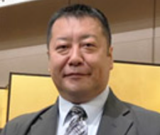
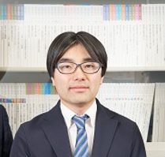

President
青木 秀希
国際アパタイト研究所 代表取締役
Bio Integration Society
バイオインテグレーション学会Core Members
材料科学、口腔科学、臨床実装を横断しながら、学会運営と学術発信を担うメンバーを紹介します。 それぞれの専門性を持ち寄り、学会誌、研究交流、情報発信の基盤を支えています。
President
国際アパタイト研究所 代表取締役
Honorary Chair
東京医科歯科大学 名誉教授

Core Member
国立研究開発法人物質・材料研究機構 バイオセラミックスグループ グループリーダー
北海道大学 大学院情報科学研究科 生命人間情報科学専攻 客員教授
岡山大学 大学院ヘルスシステム統合科学研究科 客員教授
筑波大学 グローバル教育院 教授
明治大学 兼任講師

Editorial / Web
鹿児島大学大学院医歯学総合研究科 助教（研究准教授）
学会誌編集とWEB発信の両面から、研究成果の可視化と発信強化に取り組んでいます。